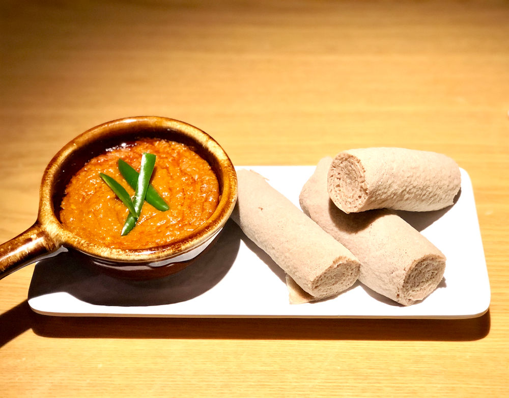

Shiro Wat

Shiro is a simple, silky ground chickpea stew that takes little time and effort to bring together. In Eritrea and Ethiopia, it’s a most beloved and important dish — a vital source of flavor and protein. In those countries, it’s made with widely available shiro powder, a mixture of ground chickpeas, garlic, onion and spices.
INGREDIENTS
- shiro powder
- 1 onion
- ⅓ cup olive oil
- 1 teaspoon minced garlic
- 1 tablespoon tomato paste
DIRECTIONS
- In a medium sized pot or Dutch oven, heat ⅓ cup of olive oil on low to medium heat.
- Add a teaspoon of minced garlic along with the tomato paste and sauté for 30 seconds until the garlic is fragrant.
- Now, add the shiro powder, along with salt and 3 cups of water, and bring to a boil on medium heat. Then, turn down the heat to a low to medium, and let it simmer for about 20 to 30 minutes to allow the mixture to thicken to your desired consistency.
Home Page